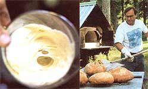

Until the Industrial Revolution, nearly all breads were made from sourdough cultures fermented by air- borne bacteria and yeast, which create most these breads' flavor. Bake bread in this ancient tradition, with natural, homemade sourdough starter instead of coil , commercial yeast, and discover rich texture and fabulous flavor.
Sourdough breads have been around for centuries. At some time in human history, people figured out they could ferment grain and use it to make bread. Perhaps, as Ed Wood speculates in his book Classic Sourdoughs: A Home Baker's Handbook (see MOTHER'S Bookshelf, Page 103), cakes of cereal left sitting out on warm days inadvertently collected wild yeasts. Eventually, someone baked the cake and discovered bread; later on, people learned to use pieces of old bread to make subsequent batches rise. It wasn't until 1857 that Louis Pasteur discovered the secret beasts that give bread its boost: yeast.
But yeast is not the only factor involved in making sourdough bread. Although yeast is responsible for raising the dough, bacteria, primarily lactobacilli, are an essential part of the process. They thrive in the acidic environment of sourdough's active yeast culture and produce a multitude of flavors for which sourdoughs are known.
Besides the intricate workings of yeasts and bacteria, time is the primary component that separates sourdoughs from commercial yeast breads. It takes many hours for the wild yeasts and bacteria in sourdoughs to do their work.
Unlike sourdough starters, which are inhabited by many different species of wild yeast, baker's yeast is made from a single hyperactive species that produces a uniform product in a relatively short period of time. The two hours required to make a loaf of fluffy white bread also do not give bacteria adequate time to complete their job, so most people consider the flavor far less complex and interesting. And a cake of baker's yeast produces only a single batch of bread, while a carefully tended sourdough culture can conceivably be passed down through generations.
GETTING STARTED
Before you can begin baking sour dough breads you need to cultivate a healthy, active culture, or starter-what the French call levain. You can buy one of the exotic cultures from Ed Wood's company, Sourdoughs International, in Cascade, Idaho, or from King Arthur Flour in Norwich, Vermont (see " Resources ," at right). But it's just about as easy to harvest local, wild yeast and make your own. Experts disagree whether the yeasts that ferment sourdough bread cultures originate in the grain or the air, but you can be sure there are plenty of them available wherever you live.
Many complicated starter recipes have been published in books and magazines over the years, but Alan Scott, co-author with Daniel Wing of The Bread Builders: Hearth Loaves and Masonry Ovens, eschew theist all. Scott's technique for making starter is simply to mix together some fresh organic flour with some spring water (avoid chlorinated water, which can kill the microorganisms you're trying to encourage), then set the starter in a warm place for a few days. "As long as you feed it organic, freshly ground flour and good water, and keep it at a steady temperature you'll develop a stable society of microorganisms that will get along quite well," he says.
You'll need a glass jar or nonmetal mixing bowl to start your culture. (Wash it well before you begin, so you don't give any nondesirable bacteria a head start.) Mix 1 cup flour with 3/4 cup water, then cover the bowl lightly with cheesecloth and set it in a place where the temperature will remain warm and constant. Stir the mixture occasionally and check it in 24 to 48 hours. When you see small bubbles beginning to form, start adding the same amount of flour and water once a day for the next two days, until the culture becomes very bubbly, possibly even foamy. (If nothing happens, it's probably best to throw the whole mix in the compost bin and begin again.)
Once the starter becomes active, the microbes will get hungry more quickly. Remove 1 cup of the culture (discard the remainder) and feed it 1 cup of flour and about 3/4 cup of water every 12 hours for the next three days. By week's end you should have a bubbly, active starter that will become even more lively and flavorful as you use it over the next few weeks.
You can store your starter in the refrigerator for weeks, even months, between baking. Each time you bake, remember to reserve a cup of the starter and feed it 1 cup of flour and 1 cup of water. Pour this mixture into a wide-mouthed jar, then cover loosely with a lid to permit some air exchange. Pennsylvania baker Steve Getz allows the mixture to rest for a couple of hours before putting it back in the refrigerator to give the microbes a chance to work on the fresh flour. At some point, a light brown liquid, called hooch, may form on top. This is a normal development in a healthy culture. Just stir it back into the mixture.
PREPARING TO BAKE
Though they typically bake dozens of loaves at a time to supply their customers at Bake Oven Farm, Steve and Karen Getz of Pleasant Valley, Pennsylvania, have developed a favorite two loaf recipe they use for the family and for testing new flours. To fit your baking time around your day job, Steve suggests refreshing your culture the evening before you plan to bake. Remove the starter jar from the refrigerator and pour the culture into a large, nonmetal (like glass or ceramic) mixing bowl. Feed it 1 cup of flour and enough water (about 3/4 cup) to create a consistency similar to pancake batter, then cover the bowl tightly with plastic. Let it sit overnight in a warm spot where the temperature will remain between 75 and 80 degrees. in the morning, your culture should have risen considerably and be full of bubbles.
Some bakers add more flour and water, and allow the starter to ferment several hours longer during what's called a sponge state. But you can skip the sponge step and mix your dough, Steve says, as long as you allow the dough a long, slow rise to develop flavor.
INTO THE OVEN
The key components in achieving a crusty bread with a lusciously soft crumb are heat and steam. These conditions are easy to achieve in a wood-fired oven. For those with gas or electric ovens, there's kitchen gadget that closely simulates the climate within a wood-fired oven: La Cloche. A simple ceramic platter with a bowl-shaped cover, La Cloche captures the moisture inside the dough and mimics the moist, radiant heat found in wood ovens. Steve uses one to make his Bake Oven Farm recipe ( see recipe ) and says the results are nearly identical to those of his commercial wood oven. He recommends buying a sturdy pair of oven mitts along with La Cloche because you'll need to remove the cover to check on the bread while it's baking. ( See sources. )
A pizza stone is another way to create the radiant heat necessary for making a good crust, but you'll need to be a bit more resourceful to provide the necessary moisture. Some people use a spray bottle to mist the oven just before putting the bread in, then mist again every five minutes for the first 15 minutes or so. You can also lay a wet towel inside the oven door for the first part of the baking process, as long as you're not likely to forget about it. (Set a timer to ring 10 minutes after you put the bread in the oven if you need help remembering to remove the towel.)
The bread needs to bake 45 to 50 minutes in a 475-degree oven. If you're using La Cloche, Steve suggests resisting the urge to remove the cover for at least 30 minutes, then checking the bread periodically after that.
Knowing exactly when bread is finished baking is somewhat of an acquired skill, but most people rely on the thump as their primary cue. Just press your forefinger against your thumb and give the loaf a good thwack! If it sounds hollow, it's ready to come out. If you're willing to put a hole into your beautiful loaf, you can use a thermometer and remove the loaf when its internal temperature is between 190 degrees and 210 degrees.
Irresistible as it will surely be, try to refrain from cutting into the hot loaf as soon as you pull it from the oven. The flavor will fully develop as the bread cools and releases trapped carbon dioxide. Few of us, though, have the fortitude to wait more than a few torturous minutes before tearing into the loaf. A primal urge surrounds a fragrant loaf of steaming bread-a familiarity Alan has witnessed time and again. "To bite into these fermented breads," he says, "is to experience a sort of homecoming. A little bit of old-time comfort in the face of modern science."
Slashing the dough
When bread dough meets high oven temperatures, it gets a lift known as oven spring, which helps give bread a lighter texture. Slashing the top surface of the loaf allows the contents inside to expand, or bloom. You can buy special tools for Slashing, or use a sharp knife or single-edge razor blade. (Cushion the dull side with masking tape to make it safer and easier to handle.) The way a loaf is slashed becomes the baker's signature, so try your hand making a unique, creative cut.
Use Fresh Flour
Sure, you can make a respectable loaf of bread using a brand-name flour found ,ray your local supermarket's shelves, but if you're using a living culture, why not use a freshly ground flour that will enhance its complex flavor?
Most experts agree that a high-gluten bread flour is the best choice for making most kinds of bread. However, bread bakers Alan Scott and Steve Getz both agree the most important quality for a good bread flour is its freshness. "We've found that our cultures are much more active and the bread rises much better when we use-freshly ground flour," Steve says.
Alan has discovered some important benefits from working with flours that are ground slowly between the mill stones, "if you grind the grain very slowly, then allow the flour to rest between the stones for a period of time, the oils will saturate the flour more thoroughly. What you get is a very creamy, fragrant flour. When you put this flour into the bread starter, it's about twice as active as other cultures." One reason the starter works so well, Alan theorizes, is because slow-grinding polishes the edges of the bran. In contrast, Alan says sharp bran particles, which punch holes in the gluten and let the gas escape, inhibit bread-rising.
Alan works primarily with whole wheat flours, but Steve prefers a blend of an organic unbleached flour and an organic hard winter wheat he grinds himself. He recommends combining equal parts of each, then experimenting with the ratios until you find the combination you like best. Several brands of hand grinders are available for the home baker, but if grinding your own flour doesn't fit your lifestyle, try to find a local mill. Good flours also are available by mail (see Resources and many natural foods stores offer organic flours.
Kneading & Shaping
Kneading sourdough is similar to kneading other types of dough, except that the culture does some of the work for you. Sourdough baker and author Alan Scott has found that, when baking with the high temperatures in wood-fired ovens, very little kneading is necessary. "All things are slowed down, because of the oven and the type of bread," he says. "We've found that we can use wet, wet doughs and they don't need to be kneaded-just folded over every half hour so the water can be absorbed." Capturing that moisture, Alan says, creates a nicer texture or crumb, and allows you to experiment with different, more flavorful kinds of wheat, some of which don't have as much gluten as typical bread flour. "The slacker, the moister the dough, the more moist the finished product. It's the same thing the factories are after with all their additives."
Those of us not fortunate enough to have high-temperature wood-fired ovens will need to work with a drier dough. Some people begin kneading right in the bowl, folding the dough over on top of itself, then rolling it out onto a lightly floured table as it becomes more manageable. Baker Steve Getz recommends giving the dough a resting period in the middle of the process. When the dough becomes fairly workable, cover it lightly with a cotton towel and allow it to rest for 30 minutes before you finish the process. "I like to give the bread a break sooner than later, about halfway into the kneading," he says. Then knead again. When your dough is smooth and elastic, put it into a large, lightly oiled bowl. Cover the bowl with plastic and allow it to rise, or proof, slowly in a cool place for eight to 10 hours, or until its size has doubled. If you're proofing at higher temperatures, your dough will rise faster, so you'll need to keep an eye on it. It's best to keep the temperature under 75 degrees so the bacteria has plenty of time to develop the flavor.
When the dough is ready to shape, turn it onto a lightly floured table. Steve uses a two-stage method of shaping, in which he builds texture, similar to making flaky pastry. Flatten the dough into a long rectangle about 1 inch thick, separating it into two loaves. Fold each piece into thirds lengthwise, folding one side over the other. Then fold the ends over each other, pressing lightly on the center with your fist to hold everything in place.
Next, take your squarish piece of dough and shape it lightly around the edges to form a ball, or boule. Let it rest for about 15 minutes, then turn it over and flatten it. Repeat the shaping process, but this time, put your boule into a bowl or basket lined with a well-floured cotton towel or piece of linen. Allow the dough to rise about 45 minutes or until its size has almost doubled.
Bake Oven Farm Sourdough
2 cups starter 6 cups organic flour (Try a mixture of 50 percent unbleached and 50 percent whole wheat flour, or adjust the proportions to your taste.) 2 1/2 cups spring water 1 tablespoon salt
Mix the flour and salt together in a large bowl. In a separate bowl, dilute the starter with the water. Slowly mix the starter into the flour. (Steve prefers to use his hands, but the more fastidious among us may prefer to use a wooden spoon.) Begin kneading and slowly work the flour into the dough. Just as the dough becomes workable, stop and allow it to rest for about 30 minutes. Resume kneading until the dough becomes smooth and elastic.
Shape it into a ball and put it into a lightly oiled bowl, then cover it with plastic and allow it to rise in a cool place (about 62 degrees) for eight to 10 hours. Shape the dough twice (see " Kneading and Shaping ," Page 68) and allow it to rise about 45 minutes, or until it doubles. If you're using La Cloche (see " Resources ," Page 65 for ordering information) or a baking stone, now's the time to preheat it and the oven. Slash the loaves just before you put them in the oven. (See " Slashing the Dough ") Bake at 475 degrees for 45 to 50 minutes or until the bread sounds hollow when you thump it with your finger.
Lynn Keiley gardens, cooks and writes in Pennsylvania. A former baker of hockey pucks, she now makes splendid loaves of crusty sourdough bread.
|
Tenacious, gassy starter clings to the side of a cup. In a starter, these are good qualities. |
 Daniel Wing, co-author of The Bread builders, removes lovely sourdough loaves from his outdoor oven in Corinth,Vermont. |
|
|
|
|
|